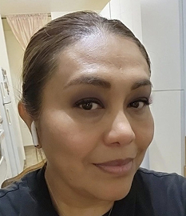
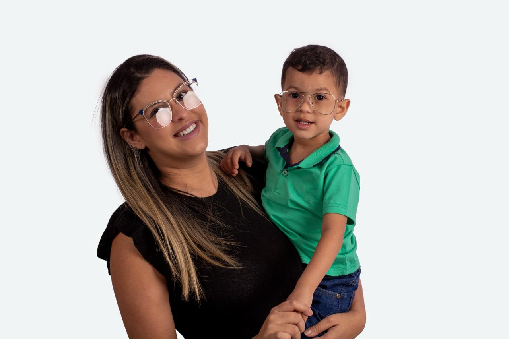

★★★★★
“Me ayuda poder encontrar ideas claras y rápidas que puedo adaptar a lo que tenemos en casa.”
Testimonio y puntuación de prototipo
LauraPersona cuidadora · testimonio de prototipo
En ITASO-MX te acompañamos con información confiable, actividades prácticas y herramientas simples para que tú y tu familia puedan comer mejor, moverse más, descansar bien y disfrutar la infancia.
Empezar a explorar

Juegos interactivos diseñados para que niñas y niños descubran, practiquen y participen mientras las personas cuidadoras encuentran herramientas para acompañarlos.


Guías, actividades y recursos prácticos para consultar, compartir y utilizar en casa o en la escuela.
Ver recursosSomos un proyecto de la Universidad La Salle México que desarrolla intervenciones educativas, interdisciplinarias y basadas en evidencia para favorecer hábitos saludables en niñas, niños y adolescentes.
Trabajamos junto con personas cuidadoras, educadores y comunidades para transformar conocimiento científico en herramientas que puedan aplicarse en la vida cotidiana.

Cada familia tiene tiempos, necesidades y formas distintas de construir hábitos. ITASO acompaña esas pequeñas decisiones con información clara, actividades y alternativas aplicables a la vida cotidiana.
“Me ayuda poder encontrar ideas claras y rápidas que puedo adaptar a lo que tenemos en casa.”
Testimonio y puntuación de prototipo
“Me gusta que la información sea sencilla y que pueda revisarla antes de tomar una decisión.”
Testimonio y puntuación de prototipo
“Las actividades nos dan una oportunidad para hablar del tema juntos y encontrar opciones que funcionen para nuestra rutina.”
Testimonio y puntuación de prototipo